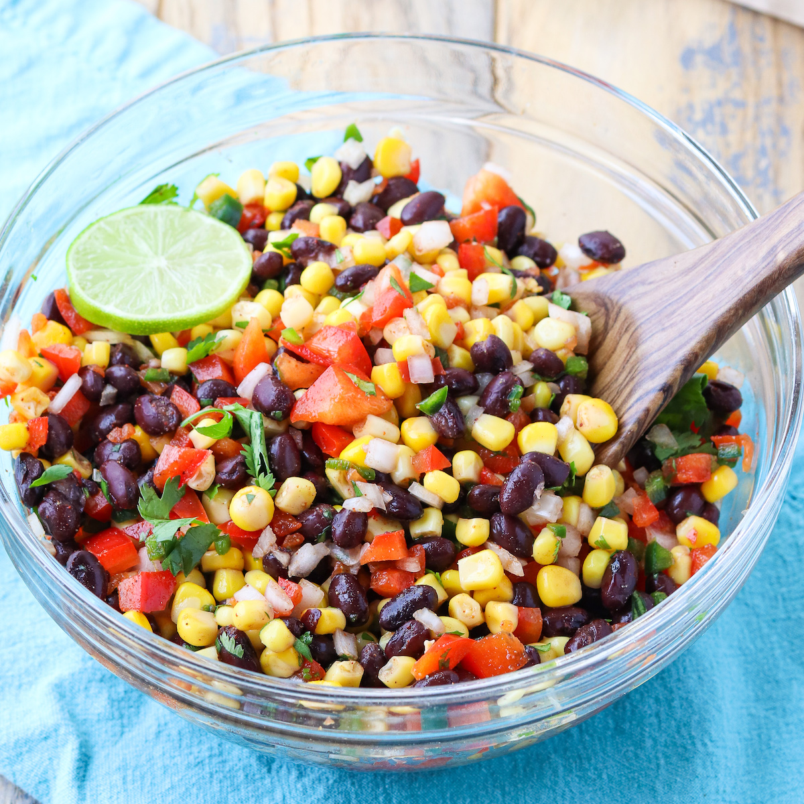

Southwest Blackbean Salad

Description
Imagine a vibrant Southwest black bean salad that combines the earthy richness of black beans with the crispness of fresh veggies, all tossed in a tangy lime dressing.
The dish is colorful, full of flavor, and perfect as a light meal or a side dish, bringing a refreshing taste of the Southwest to your table.
Ingredients
- 1 can (15 oz) black beans, drained and rinsed
- 1 cup corn kernels (frozen)
- 1 small red onion, diced
- 1 red bell pepper, diced
- 1 cup cherry tomatoes, halved
- 1/4 cup fresh cilantro, chopped
- Juice of 2 limes
- Salt and pepper to taste
Steps
- Prep Ingredients: Drain and rinse the black beans, dice the bell pepper and onion, and halve the cherry tomatoes.
- Mix Salad: In a large bowl, combine the black beans, corn, bell pepper, red onion, cherry tomatoes, and cilantro.
- Dress Salad: Squeeze the lime juice over the salad, add salt and pepper to taste, and toss everything together until well mixed.
- Serve: Chill the salad for a bit if desired, then serve as a refreshing side or light meal.